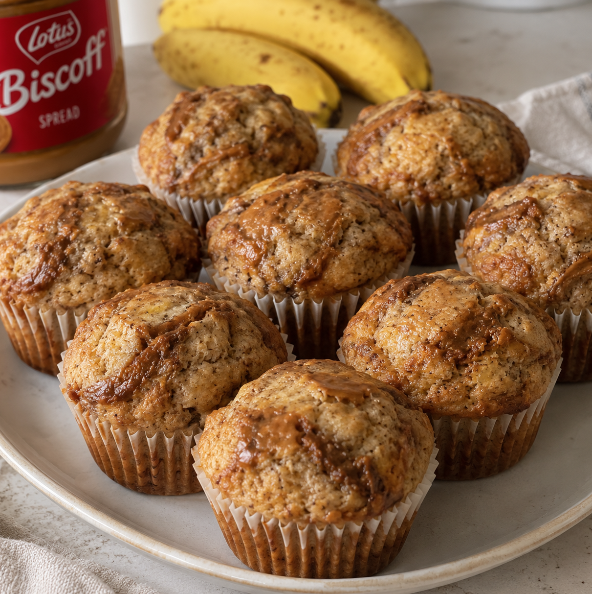

Biscoff Banana Muffins

Description
Moist banana oat muffins swirled with Biscoff spread, combining the sweetness of ripe bananas with warm cinnamon and caramelized Biscoff flavor. Soft, tender, and lightly nutty, with gooey pockets of Biscoff throughout.
Ingredients (Makes 5-6 large muffins)
Dry ingredients
- 140g AP flour
- 40g rolled oats
- 5g baking soda
- 6g baking powder
- 3g salt
- 2g ground cinnamon
- 1g nutmeg (optional)
- 5g instant coffee (or espresso)
Wet Ingredients
- 250g very ripe bananas (2 bananas)
- 80g plain greek yogurt or sour cream
- 60g white sugar
- 30g brown sugar
- 50g egg (1 large egg)
- 5g vanilla
- 55g melted butter
- 60g Biscoff spread (chunky or smooth)
- 50g Biscoff chunky spread for swirling
Instructions
- Preheat the oven to 200°C. Line a large muffin pan with paper liners.
- Mash 2 very ripe bananas until mostly smooth.
- Add the wet ingredients and sugar directly to the mashed banana: eggs, yogurt, melted butter, Biscoff spread, brown sugar, white sugar, and vanilla. Whisk until well combined.
- Mix the dry ingredients in a separate bowl: all-purpose flour, rolled oats, baking powder, baking soda, salt, cinnamon, nutmeg, and coffee.
- Add the dry ingredients to the banana mixture and gently fold with a spatula until just combined. Do not overmix. (Add a dash of milk if batter too dry, skip this if use espresso)
- Rest the batter for about 15 minutes. This allows the oats to absorb some of the moisture and gives the batter a thicker consistency.
- Fill the muffin cups. For extra Biscoff flavor, add a little Biscoff spread to the top and gently swirl it through the batter.
- Bake the muffins for about 20-25 minutes until the muffins are risen, golden, and cooked through (Reduce the temperature to 175°C for the second half of the baking time if the muffins brown too quickly, and add an extra 3 to 5 minutes to the total time).
- Let them rest in the pan for about 10 minutes before moving them to a cooling rack.
Notes:
- All ingredients should be at room temperature.
- Biscoff spread can be microwaved for easier mixing and swirling.
- Brown butter can be used instead of butter or toasted milk powder can be added for extra caramel flavor.
- You can also add nuts or dried fruits to the batter, such as walnuts, pecans, almonds, raisins, or dried cranberries. Gently fold them in at the end before filling the muffin cups.
- Store extra batter in the fridge. The batter can be stored in the fridge for up to 24 hours.
- Use Biscoff cookie crumbs (on top of muffin and mixed into batter) or streussel for extra crispiness.
- Decorate with bruleed banana slices.
- Add 1 spoon of cream cheese mix (120g cream cheese, 1 egg yolk, 30g sugar) into each muffin on top before swirling in Biscoff spread, or a spoon of Basque cheesecake batter (same batter, adding 140g heavy cream and 10g corn starch) in the center to make Banana Biscoff Cheesecake Muffins
Home